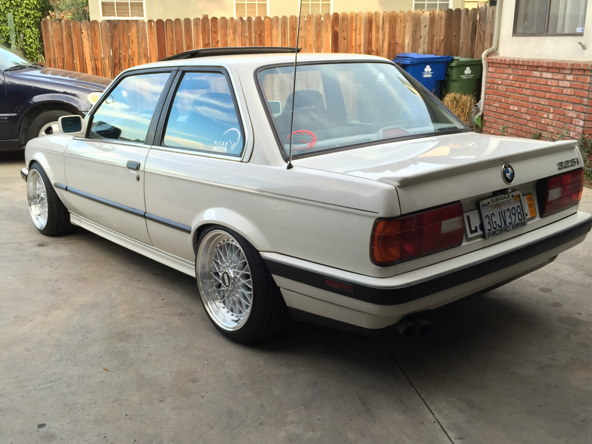

CARLY Auto investments
B.M.W 325is e30
M250 000.00
BMW 325is (man. 5) 3 series E30 in 1987
the model with 2-door sedan body and
Line-6 2494 cm3 / 152.3 cui, 125 kW / 170 PS / 168 hp (SAE net) of power,
222 Nm / 164 lb-ft of torque, fron and side air-bags
5-speed manual transmission, with anti-lock brakes
BMW would accelerate 0-60 mph in 7.5 sec,
0-100 km/h in 8 sec, 0-200 km/h in 65.6 sec and quarter mile time is 15.7 sec.
This car is 4325 mm / 170.3 in long, 1645 mm / 64.8 in wide and 1380 mm / 54.3 in high.